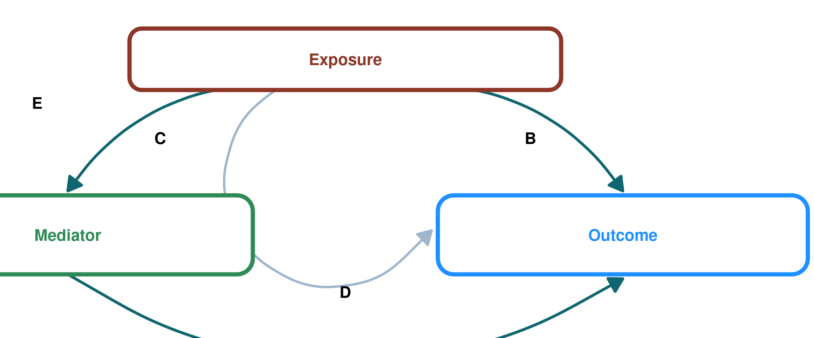
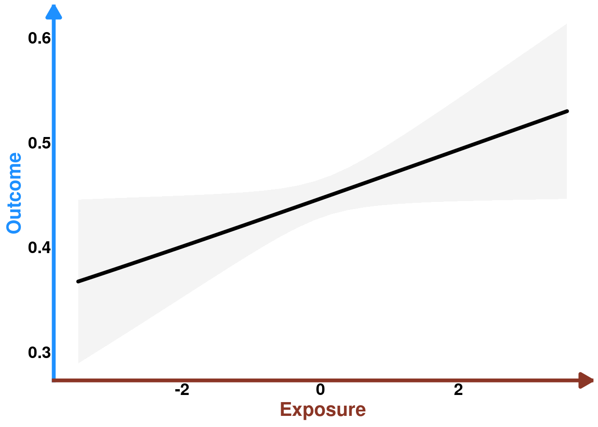
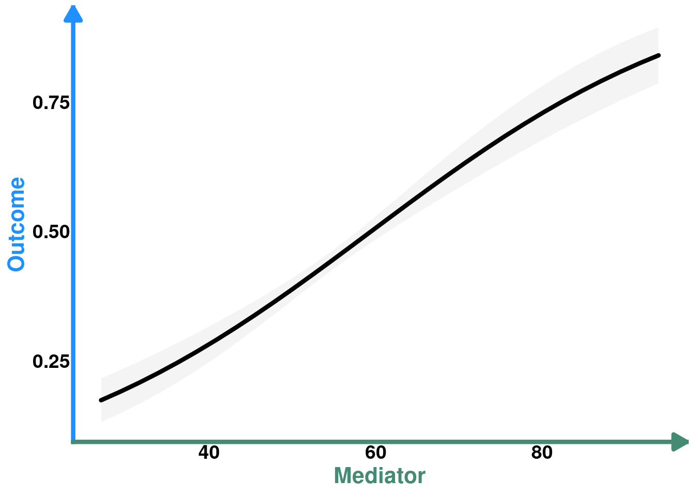
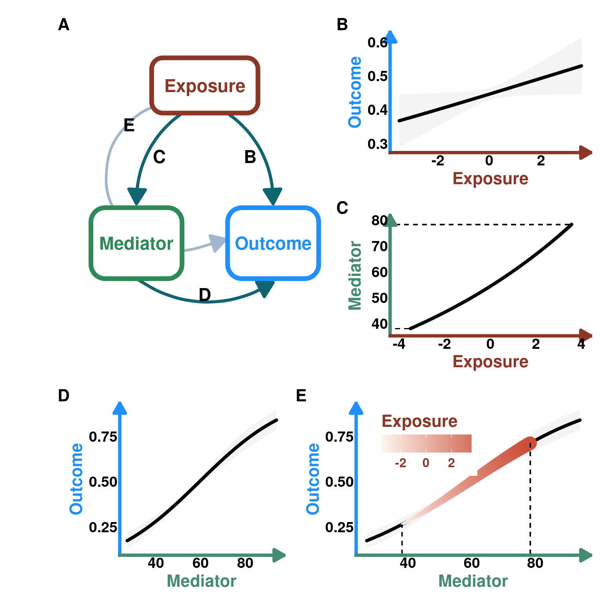

library(tidyverse) # data manipulation and plotting
library(glmmTMB) # frequentist glmms
library(patchwork) #multiple plots
library(marginaleffects) # marginal predictions
set.seed(333) # set seed to reproduce the simulations exactlySimulations
Using simulations, we will explore how to visualize indirect effects with 3 examples. These include the simple case in which we have an exposure, mediator and outcome variable. The second example is one where the exposure is actually composed of an interaction between two exposure variables. The third example is one where the mediator is composed of an interaction between two variables.
Set up workspace
Load packages
DAG plotting function
#' Create a DAG plot with rounded boxes and arrows
#'
#' @param labels Character vector of length 3 with names for Exposure, Mediator, Outcome
#' @param arrow_labels Character vector of length 4 with labels for paths B, C, D, E (default: c("B", "C", "D", "E"))
#' @param box_colors Character vector of length 3 with hex colors for boxes (default: c("#B22222", "#2E8B57", "#1E90FF"))
#' @param arrow_color Color for arrows (default: "#0F6670")
#' @return A ggplot object
create_dag_plot <- function(labels = c("Exposure", "Mediator", "Outcome"),
arrow_labels = c("B", "C", "D", "E"),
box_colors = c("tomato4", "#2E8B57", "#1E90FF"),
arrow_color = "#0F6670") {
# Path diagram (DAG) — rounded boxes + arrows
# boxes: name, center x/y, width, height, border colour
# Using wider coordinate system (0-1.4 for x) to create rectangular plot
boxes <- data.frame(
name = labels,
x = c(0.7, 0.25, 1.15),
y = c(0.8, 0.4, 0.4),
width = c(0.7, 0.6, 0.6),
height = c(0.14, 0.18, 0.18),
col = box_colors,
stringsAsFactors = FALSE
)
# arrow head style
arr_closed <- grid::arrow(length = unit(0.22, "inches"), type = "closed")
arr_open <- grid::arrow(length = unit(0.22, "inches"), type = "open")
# Draw arrows FIRST so they appear behind boxes
p <- ggplot() + xlim(0.2, 1.4) + ylim(0.2, 0.9) +
# B: Exposure -> Outcome (right, curved)
geom_curve(aes(x = 0.81, y = 0.74, xend = 1.15, yend = 0.5),
curvature = -0.28, color = arrow_color, size = 1.4, arrow = arr_closed) +
# C: Exposure -> Mediator (left, curved)
geom_curve(aes(x = 0.59, y = 0.74, xend = 0.25, yend = 0.5),
curvature = 0.28, color = arrow_color, size = 1.4, arrow = arr_closed) +
# D: Mediator -> Outcome (bottom, long curve)
geom_curve(aes(x = 0.25, y = 0.31, xend = 1.15, yend = 0.3),
curvature = 0.32, color = arrow_color, size = 1.4, arrow = arr_closed) +
# E: dashed indirect (Exposure -> Outcome via dashed curved line)
geom_curve(aes(x = 0.62, y = 0.765, xend = 0.84, yend = 0.41),
curvature = 1.5, color = "slategray3", size = 1.2, arrow = arr_closed)
# Now draw boxes on top of arrows
for(i in seq_len(nrow(boxes))){
bx <- boxes[i,]
xmin <- bx$x - bx$width/2
xmax <- bx$x + bx$width/2
ymin <- bx$y - bx$height/2
ymax <- bx$y + bx$height/2
# draw a rounded rectangle as a grob and place it with annotation_custom
rr <- grid::roundrectGrob(r = unit(0.2, "snpc"),
gp = grid::gpar(fill = "white", col = bx$col, lwd = 6))
p <- p + annotation_custom(rr, xmin = xmin, xmax = xmax, ymin = ymin, ymax = ymax) +
annotate("text", x = bx$x, y = bx$y, label = bx$name,
fontface = "bold", size = 6, colour = bx$col)
}
# Add labels for arrows on top
p <- p +
annotate("text", x = 1.00, y = 0.62, label = arrow_labels[1], size = 6, fontface = "bold") +
annotate("text", x = 0.40, y = 0.62, label = arrow_labels[2], size = 6, fontface = "bold") +
annotate("text", x = 0.70, y = 0.27, label = arrow_labels[3], size = 6, fontface = "bold") +
annotate("text", x = 0.2, y = 0.7, label = arrow_labels[4], size = 6, fontface = "bold") +
coord_cartesian(clip = "off") +
theme_void()
return(p)
}Example 1 - simplest case
First, we will simulate data from this DAG:
Code
# Create DAG with default labels
DAG_default <- create_dag_plot()
print(DAG_default)
Data
n <- 3000 # sample size
E <- rnorm(n, 0, 1) # define E as a Z-score
M <- rpois(n, exp(4 + 0.1*E)) # M is a poisson variable whose link is the log function so defining the coefficients using the inverse log (exponential)
O <- rbinom(n, size = 1, prob = plogis(-3 + 0.1*E + 0.05*M)) # O is a Bernoulli variable whose link is the logit so defining the coefficients using the inverse logit (plogis)
data <- tibble(
E = E,
M = M,
O = O,
O_1 = 1 - O
)
head(data)# A tibble: 6 × 4
E M O O_1
<dbl> <int> <int> <dbl>
1 -0.0828 44 0 1
2 1.93 71 1 0
3 -2.05 45 0 1
4 0.278 58 0 1
5 -1.53 43 0 1
6 -0.269 62 0 1Models
We need two models: one where we regress the Mediator as a function of the Exposure. A second where we regress the Outcome as a function of both the Mediator and Exposure. ### M ~ E
mM_E <- glmmTMB(M ~ E, family = poisson, data = data)O ~ E + M
mO_EM <- glmmTMB(cbind(O, O_1) ~ E + M, family = binomial, data = data)Predictions
M ~ E
pred_M_E <- predictions(mM_E, vcov = TRUE, newdata = datagrid(E = seq(from = min(data$E), to = max(data$E), length.out = 3000))) # need many points for the visualisation of the indirect effect later on
head(pred_M_E)
E Estimate Std. Error z Pr(>|z|) S 2.5 % 97.5 %
-3.51 38.1 0.352 108 <0.001 Inf 37.4 38.7
-3.50 38.1 0.352 108 <0.001 Inf 37.4 38.8
-3.50 38.1 0.351 108 <0.001 Inf 37.4 38.8
-3.50 38.1 0.351 108 <0.001 Inf 37.4 38.8
-3.50 38.1 0.351 108 <0.001 Inf 37.4 38.8
-3.50 38.1 0.351 109 <0.001 Inf 37.4 38.8
Type: responsePlot
pM_E <- ggplot(data = pred_M_E) +
geom_line(aes(y = estimate, x = E),
lineend = "round",
linewidth = 1.5) +
geom_ribbon(aes(ymin = conf.low, ymax = conf.high, x = E),
alpha = 0.2) +
geom_segment(y=min(pred_M_E$estimate),
x = min(pred_M_E$E)*1.3,
xend= min(pred_M_E$E),
linetype= "dashed") +
geom_segment(y=max(pred_M_E$estimate),
x = min(pred_M_E$E)*1.3,
xend= max(pred_M_E$E),
linetype= "dashed") +
scale_y_continuous(breaks = seq(from = 40, to = 80, by = 10))+
theme_classic() +
labs(title = NULL,
y = "Mediator",
x = "Exposure") +
coord_cartesian(xlim = c(-4,4)) +
theme(axis.line.y = element_line(arrow = arrow(
length = unit(0.15, "inches"),
ends = "last",
type = "closed"),
linewidth = 1.5,
color = "aquamarine4"),
axis.line.x = element_line(arrow = arrow(
length = unit(0.15, "inches"),
ends = "last",
type = "closed"),
linewidth = 1.5,
color = "tomato4"),
axis.ticks = element_blank(),
axis.title.x = element_text(color = "tomato4",
size = 16,
face = "bold",
family = "",
lineheight = 1.5),
axis.title.y = element_text(color = "aquamarine4",
size = 16,
face = "bold",
family = "",
lineheight = 1.5),
axis.text.x = element_text(face = "bold",
size = 14),
axis.text.y = element_text(face = "bold",
size = 14),
plot.title = element_text(size = 16))
pM_E
O ~ E + M
Direct effect of E
pred_O_E <- predictions(mO_EM, vcov = TRUE, newdata = datagrid(E = seq(from = min(data$E), to = max(data$E), length.out = 30)))
head(pred_O_E)
E Estimate Std. Error z Pr(>|z|) S 2.5 % 97.5 %
-3.51 0.367 0.0399 9.21 <0.001 64.8 0.289 0.445
-3.26 0.373 0.0375 9.94 <0.001 75.0 0.299 0.446
-3.02 0.378 0.0351 10.78 <0.001 87.6 0.309 0.447
-2.77 0.383 0.0326 11.75 <0.001 103.5 0.319 0.447
-2.53 0.389 0.0302 12.89 <0.001 123.9 0.330 0.448
-2.29 0.394 0.0277 14.23 <0.001 150.3 0.340 0.449
Type: responsePlot
pO_E <- ggplot(data = pred_O_E) +
geom_line(aes(y = estimate, x = E), linewidth = 1.5, lineend = "round") +
geom_ribbon(aes(ymin = conf.low, ymax = conf.high, x = E), alpha = 0.05) +
theme_classic() +
labs(title = NULL,
y = "Outcome",
x = "Exposure") +
theme(axis.line.y = element_line(arrow = arrow(
length = unit(0.15, "inches"),
ends = "last",
type = "closed"),
linewidth = 1.5,
color = "dodgerblue1"),
axis.line.x = element_line(arrow = arrow(
length = unit(0.15, "inches"),
ends = "last",
type = "closed"),
linewidth = 1.5,
color = "tomato4"),
axis.ticks = element_blank(),
axis.title.x = element_text(color = "tomato4",
size = 16,
face = "bold",
family = "",
lineheight = 1.5),
axis.title.y = element_text(color = "dodgerblue1",
size = 16,
face = "bold",
family = "",
lineheight = 1.5),
axis.text.x = element_text(face = "bold",
size = 14),
axis.text.y = element_text(
face = "bold",
size = 14),
plot.title = element_text(size = 16))
pO_E 
Direct effect of M
pred_O_M <- predictions(mO_EM, vcov = TRUE, newdata = datagrid(M = seq(from = min(data$M), to = max(data$M), length.out = 30)))
head(pred_O_M)
M Estimate Std. Error z Pr(>|z|) S 2.5 % 97.5 %
27.0 0.174 0.0216 8.06 <0.001 50.3 0.132 0.216
29.3 0.191 0.0214 8.92 <0.001 60.8 0.149 0.232
31.6 0.208 0.0209 9.94 <0.001 74.9 0.167 0.249
33.9 0.227 0.0203 11.18 <0.001 94.0 0.187 0.267
36.2 0.247 0.0194 12.72 <0.001 120.7 0.209 0.285
38.6 0.268 0.0183 14.64 <0.001 158.8 0.232 0.304
Type: responsePlot
pO_M <- ggplot(data = pred_O_M) +
geom_line(aes(y = estimate, x = M), linewidth = 1.5, lineend = "round") +
geom_ribbon(aes(ymin = conf.low, ymax = conf.high, x = M), alpha = 0.05) +
theme_classic() +
labs(title = NULL,
y = "Outcome",
x = "Mediator") +
theme(axis.line.y = element_line(arrow = arrow(
length = unit(0.15, "inches"),
ends = "last",
type = "closed"),
linewidth = 1.5,
color = "dodgerblue1"),
axis.line.x = element_line(arrow = arrow(
length = unit(0.15, "inches"),
ends = "last",
type = "closed"),
linewidth = 1.5,
color = "aquamarine4"),
axis.ticks = element_blank(),
axis.title.x = element_text(color = "aquamarine4",
size = 16,
face = "bold",
family = "",
lineheight = 1.5),
axis.title.y = element_text(color = "dodgerblue1",
size = 16,
face = "bold",
family = "",
lineheight = 1.5),
axis.text.x = element_text(
face = "bold",
size = 14),
axis.text.y = element_text(face = "bold",
size = 14),
plot.title = element_text(size = 16))
pO_M
So this is the direct effect of M on O. But, remember that M is caused by E so it may be of interest to see how E affects O indirectly, through M.
Indirect effect of E
pM_E
The next step is actually quite simple. We generate predictions for O as a function of the predictions of M ~ E
pred_O_EM <- predictions(mO_EM, vcov = TRUE, newdata = datagrid(M = pred_M_E$estimate))
head(pred_O_EM)
M Estimate Std. Error z Pr(>|z|) S 2.5 % 97.5 %
38.1 0.264 0.0186 14.2 <0.001 149.5 0.227 0.300
38.1 0.264 0.0186 14.2 <0.001 149.6 0.227 0.300
38.1 0.264 0.0186 14.2 <0.001 149.8 0.228 0.300
38.1 0.264 0.0186 14.2 <0.001 150.0 0.228 0.300
38.1 0.264 0.0186 14.2 <0.001 150.1 0.228 0.300
38.1 0.264 0.0186 14.2 <0.001 150.3 0.228 0.301
Type: responseNow, we need the values of E that were associated with the predicted values of M
pred_O_ME <- pred_O_EM %>%
select(-c(E)) %>% #remove E; it's set to its mean as we don't need it
mutate(E = pred_M_E$E)
head(pred_O_ME)
Estimate Std. Error z Pr(>|z|) S 2.5 % 97.5 %
0.264 0.0186 14.2 <0.001 149.5 0.227 0.300
0.264 0.0186 14.2 <0.001 149.6 0.227 0.300
0.264 0.0186 14.2 <0.001 149.8 0.228 0.300
0.264 0.0186 14.2 <0.001 150.0 0.228 0.300
0.264 0.0186 14.2 <0.001 150.1 0.228 0.300
0.264 0.0186 14.2 <0.001 150.3 0.228 0.301Now, we simply superimpose both graphs of O ~ M
Plot
COLS <- alpha(colorRampPalette(c("seashell","tomato3"))(30),0.8)
pO_ME <- pO_M + geom_line(data = pred_O_ME, aes(x = M, y = estimate, color = E, linewidth = E), lineend = "round") +
geom_segment(x=min(pred_O_ME$M), y = 0, yend= min(pred_O_ME$estimate), linetype= "dashed") +
geom_segment(x=max(pred_O_ME$M), y = 0, yend= max(pred_O_ME$estimate), linetype= "dashed") +
labs(title = NULL) +
scale_color_gradientn(colours = COLS, name = "Exposure") +
guides(linewidth = "none") +
theme(legend.position = "inside",
legend.position.inside = c(0.3, 0.75),
legend.direction = "horizontal",
legend.text = element_text(color = "tomato4", size = 12, face = "bold", family = "", lineheight = 1.5),
legend.title = element_text(color = "tomato4",size = 16, face = "bold", family = "", lineheight = 1.5),
legend.title.position = "top")
pO_ME
Figure for publication
# Create right column with B and C stacked
right_col_top <- pO_E / pM_E
# Create layout: DAG on left, right column on right for rows 1-2
top_section <- (DAG_default | right_col_top) + plot_layout(widths = c(1, 1))
# Row 3 has two plots side by side
row3 <- pO_M + pO_ME + plot_layout(widths = c(0.7, 1))
# Combine all
fig_1 <- top_section / row3 +
plot_layout(heights = c(2, 1)) +
plot_annotation(tag_levels = 'A') &
theme(plot.tag = element_text(size = 16, face = "bold"))
fig_1